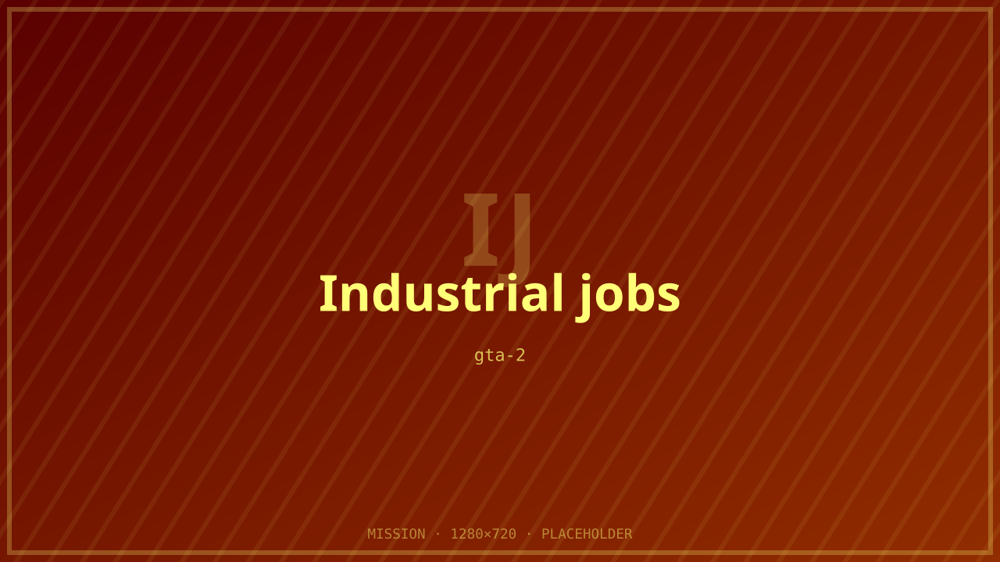

GTA 2 · 4 entries · limited
Missions — Grand Theft Auto 2
Story and side missions in order, with giver, location and reward.
Download missions.json Whole game bundle 1 unverified entry
 #1 · StoryDowntown jobs
#1 · StoryDowntown jobsFirst district mission chain; completing jobs raises respect and unlocks better weapons.
 #2 · StoryResidential jobs
#2 · StoryResidential jobsSecond district chain with tougher rivals and better payouts.

#3 · StoryIndustrial jobsThird district chain based around the docks and factories.
 #4 · StoryFinal jobs
#4 · StoryFinal jobsEndgame chain against the Zaibatsu Corporation.
| Image | # | Mission | Type | Giver | Location | Reward |
|---|---|---|---|---|---|---|
| 1 | Downtown jobs | Story | Downtown gang bosses | Downtown | $0 |
| 2 | Residential jobs | Story | Residential gang bosses | Residential | $0 |
| 3 | Industrial jobs | Story | Industrial gang bosses | Industrial | $0 | |
| 4 | Final jobs | Story | Zaibatsu | Anywhere City | $0 |
Field definitions
| Field | Type | Required | Notes |
|---|---|---|---|
order | integer | yes | |
name | string | yes | |
type | string | yes | one of: Story, Side, Asset, Heist, Contact, Strangers & Freaks, Business, Vehicle, Random Event |
giver | string | yes | |
location | string | yes | |
reward | object | yes | |
summary | string | yes | |
requirements | array | no | array of strings |
playable | string | no | |
image | string | null | no | |
verified | boolean | yes | |
source | string | no |